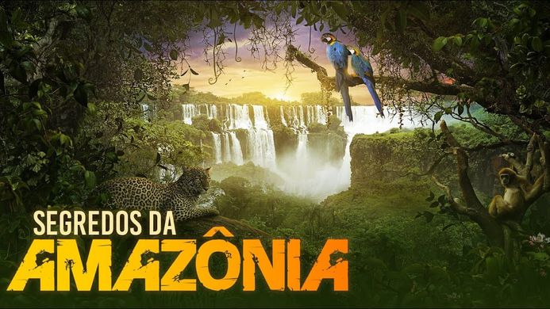

Conheça alguns trabalhos artísticos relacionados à Amazônia:
|
Amazônia |
Castanha é um macaco prego, criado em cativeiro, que é liberado na Floresta Amazônica. Seguindo o ponto de vista do animal, o filme revela os mistérios da fauna e da flora da região, destacando dificuldades enfrentadas pelo animal e ainda algumas amizades, como a com a macaca Gaia. |
Assista | |
Amazonas Clandestino |
Um repórter investigativo explora o mundo oculto das atividades ilegais pela floresta amazônica, desde a produção de cocaína até a colheita de mogno. |
Assista | |
Amazônia Descohecida |
 |
A Amazônia brasileira é disputada por todos os lados e por vários grupos, como indígenas, fazendeiros, sem terras, garimpeiros e outros. O documentário relata sobre esses conflitos através de especialistas para levantar as consequências dessa ocupação humana no local. |
Assista |
Amazônia Selvagem |
Amazônia Selvagem: Berço da Vida, é um documentário da National Geographic, que mostra asmais variadas espécies que habitam essa região, sua organização, sua luta pela sobrevivência e suas interações. É fascinante. A Amazônia é um berço para a vida. Plantas, mamíferos, artrópodes, réptil, anfíbio, peixes, tudo se encontra nela. Todos têm suas adaptações, seu nicho ecológico, mas isso pode estar acabando por nossa causa. |
Assista | |
Anajás |
 |
O que poderia dar errado em uma missão jornalística, em meio a tantos perigos, numa mata fechada, cercada pelo encontro do rio Amazonas com mar, um lugar cheio jacarés, cobras e arraias? Muitas coisas. Mas, as lentes dos jornalistas registraram só as belezas desse lugar tão inspirador, que transformou suas vidas. |
Assista |
Rios Voadores |
Os chamados “rios voadores” são correntes de umidade que se originam na floresta amazônica e abastecem todo o Brasil com água, inclusive as regiões mais ao sul do país, chegando até o Paraguai, o Uruguai e a Argentina. Este fenômeno natural está ameaçado, caso o desmatamento das florestas tropicais continue. Se a Amazônia se transformar um uma estepe, os “rios voadores” param de fluir, implicando consequência não só para o Brasil, como também para todo o clima da Terra. O Brasil, país com as maiores reservas de água do planeta, já sofre com longas e persistentes secas, resultando em racionamentos em suas grandes metrópoles. |
Assista | |
Amazônia Secreta |
 | A fauna e flora amazônicas foram descritas no impressionante Flora Brasiliensis de Carl von Martius, naturalista austríaco que dedicou boa parte de sua vida à pesquisa da Amazônia, no século XIX. Todavia, a diversidade de espécies e a dificuldade de acesso às copas elevadas tornam ainda desconhecida grande parte das riquezas faunísticas. |
Assista | Tainá |
Tainá vive na Amazônia com o avô, um sábio índio. Por defender a floresta dos caçadores, é perseguida e tem de se mudar para uma vila, onde conhece Joninho, um menino da cidade grande. Juntos, aprendem a lidar com os valores da cidade e da floresta. |
Assista |